Python 编程中 while 语句用于循环执行程序，即在某条件下，循环执行某段程序，以处理需要重复处理的相同任务。基本形式为：
while 条件：
循环体1.1 死循环示例
while True:
print("我会一直执行")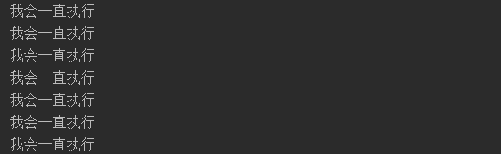
1.2 有限循环示例（使用break跳出循环）
while True:
print("我会一直执行")
print("一直执行")
print("直到遇到break")
break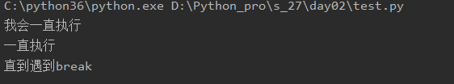
1.3 控制循环次数(while与break配合使用)
count = 0
while True:
print("条件成立我会一直执行")
print("一直执行")
print("控制为3次循环")
count += 1
if count == 3:
break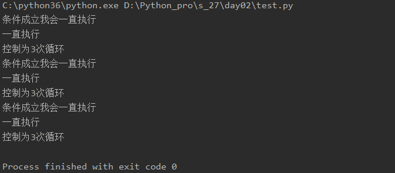
1.4 break与continue
while 与 break 配合循环使用break用于完全结束一个循环，跳出循环体执行循环后面的语句
continue只终止本次循环，接着还执行后面的循环
# break代码示例
print("我一定会执行")
while 3 > 1:
print("满足条件我会执行")
break
print("上面使用了break终止了循环，因此我不会执行")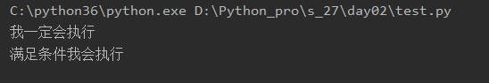
# continue代码示例
print("我一定会执行")
while 3 > 1:
print("满足条件我会执行")
print("满足条件我一样执行")
continue
print("上面使用了continue，因此我不会执行")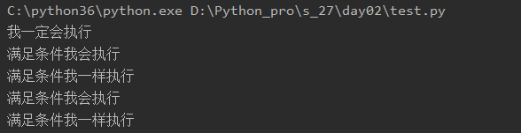
1.5 使用循环累加
count = 1
num = 0
while count < 16:
num = num + count
count += 1
print(num)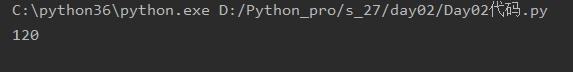
1.6 while else
while 3 < 1:
print(1111)
break
else:
print(3333)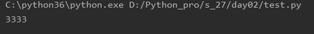
2.1 使用占位符
%s就是代表字符串占位符，除此之外，还有%d,是数字占位符，
%()再给占的位置进行填充的时候，里边的变量是一一对应的
name = input("你输入的名字：")
age = int(input("你的年龄："))
msg = """
----------------card--------------
name:%s
age:%d
----------------end---------------
"""
print(msg % (name, age))
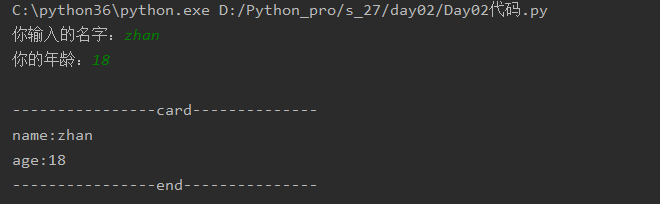
注意：如果使用%这种格式化时,想要单纯输出%需要写成%%
name = input("名字：")
num = input("进度：")
msg = "姓名：%s当前的进度为%s%%" % (name, num)
print(msg)
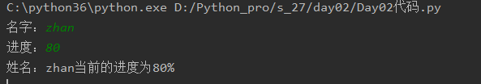
2.2 使用f,格式如下所示：
name = input("你输入的名字：")
age = int(input("你的年龄："))
msg = f"""
----------------card--------------
name:{name}
age:{age}
----------------end---------------
"""
print(msg)
3.1 算数运算符
a = 9
b = 3
print(a + b)
print(a - b)
print(a * b)
print(a / b)
print(a // b)
print(a % b)
print(a ** b)
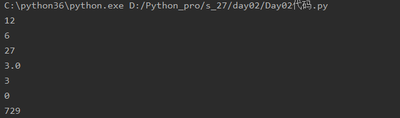
3.2 赋值运算符
a = 9
b = 3
a += b
print(a)
a -= b
print(a)
a *= b
print(a)
a /= b
print(a)
a //= b
print(a)
a %= b
print(a)
a **= b
print(a)
3.3 比较用算符
print(3 > 2)
print(3 < 2)
print(3 >= 2)
print(3 <= 2)
print(3 == 2)
print(3 != 2)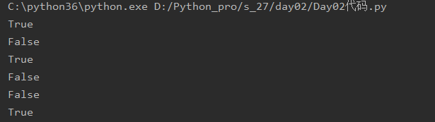
3.4 成员运算符
in
not in
3.5逻辑运算符
and
or
not
ascii : 一个英文占一个字节,不支持中文
gbk : 一个英文占一个字节,一个中文占2个字节
unicode : 英文和中文 都占4个字节
utf-8 : 一个英文占一个字节,欧洲2个字节,亚洲3个字节
# 单位转换:
1字节 = 8位